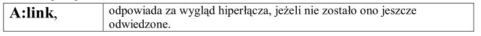
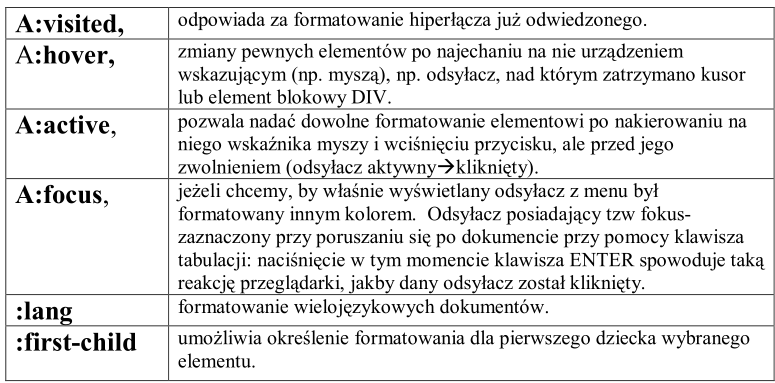
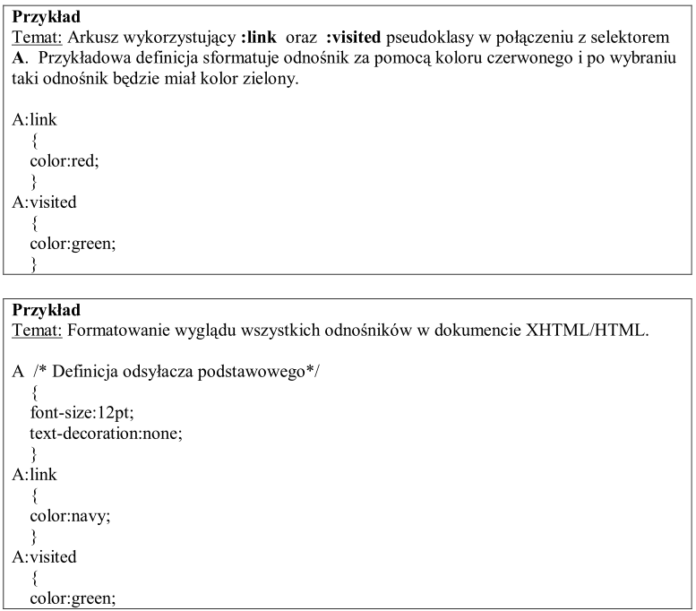
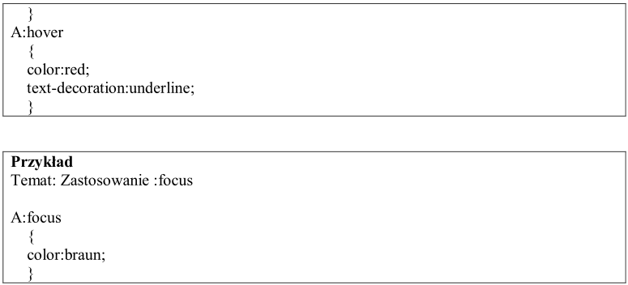

- Co to są pseudoklasyk?
CSS przewiduje kilka ściśle określonych klas pozwalających na formatowanie niektórych
elementów dokumentu są to Pseudoklasy
- Uwaga dotycząca dwukropka:
Szalenie istotnym elementem w tej konstrukcji jest dwukropek występujący pomiędzy
selektorem a nazwą klasy.
- Tabela opisującą pseudoklasy.


- Zastosowanie pseudoklasy :active
1)można używać jako uzupełnienia definicji odnośników.
2)jako elementu poprawiającego czytelność formularzy.
- Przykłady (trzy) kodów definiowania pseudoklas (wraz z tematem)

